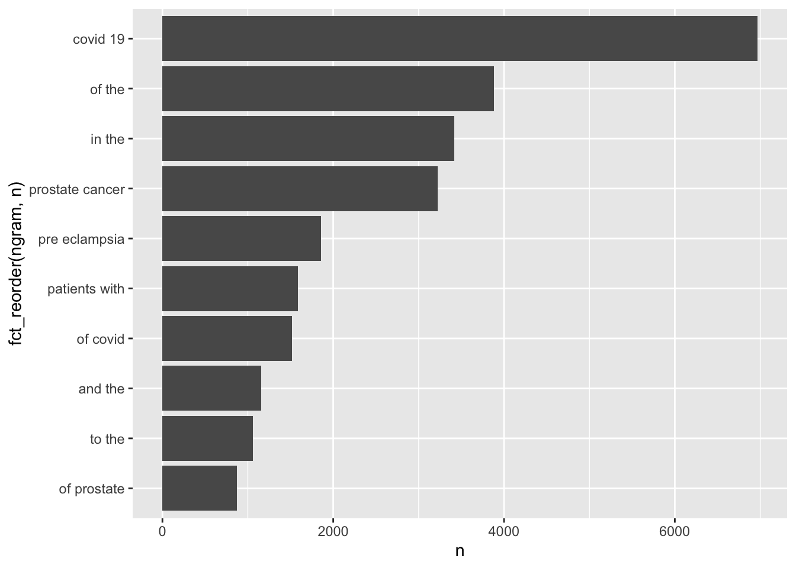

library(dplyr)
library(ggplot2)
library(readr)
library(tidytext)
library(tidyverse)
data <- read_csv("https://raw.githubusercontent.com/USCbiostats/data-science-data/master/03_pubmed/pubmed.csv")homework 3
Getting Started
head(data)# A tibble: 6 × 2
abstract term
<chr> <chr>
1 "Background and aims: Many patients with coronavirus disease 2019 (COVI… covid
2 "Introduction: Contradictory data have been reported on the incidence o… covid
3 "This article aims at collecting all information needed for dentists re… covid
4 "OBJECTIVE. The objective of our study was to determine the misdiagnosi… covid
5 "Background: Much of the focus regarding the global pandemic of coronav… covid
6 "The World Health Organization (WHO) has issued a warning that, althoug… covidtail(data)# A tibble: 6 × 2
abstract term
<chr> <chr>
1 From Antenatal Diagnostic Center referrals over 22 months, consultation… pree…
2 Objective: To describe the duration of expectant management and the ind… pree…
3 Objective: To examine the effect of a combination of screening and trea… pree…
4 Objective: To assess obstetric outcomes in women in their second pregna… pree…
5 Preeclampsia is a pregnancy-associated illness affecting multiple organ… pree…
6 Eighty-eight normotensive gravid women between 24 and 34 weeks of gesta… pree…Question 1
data |> unnest_tokens(output=word, input=abstract) |>
anti_join(stop_words, by = c("word")) |>
count(word, sort = TRUE) |>
top_n(20, n)# A tibble: 20 × 2
word n
<chr> <int>
1 covid 7275
2 19 7080
3 patients 4674
4 cancer 3999
5 prostate 3832
6 disease 2574
7 pre 2165
8 eclampsia 2005
9 preeclampsia 1863
10 treatment 1841
11 clinical 1682
12 risk 1588
13 women 1327
14 study 1299
15 results 1281
16 severe 1063
17 diagnosis 1015
18 pregnancy 1011
19 data 945
20 health 922data |> unnest_tokens(word, abstract) |>
count(word, sort = TRUE) |>
top_n(20, n)# A tibble: 20 × 2
word n
<chr> <int>
1 the 28126
2 of 24760
3 and 19993
4 in 14653
5 to 10920
6 a 8245
7 with 8038
8 covid 7275
9 19 7080
10 is 5649
11 for 5492
12 patients 4674
13 cancer 3999
14 prostate 3832
15 was 3315
16 that 3226
17 were 3226
18 as 3159
19 this 3158
20 are 2833Question 2
bigrams <- data %>%
unnest_ngrams(ngram, abstract, n = 2)
bigrams %>%
count(ngram, sort = TRUE) %>%
top_n(10, n) %>%
ggplot(aes(n, fct_reorder(ngram, n))) +
geom_col()
Question 3
numbers_df <- data.frame(word=as.character(0:50))
results <- data |> unnest_tokens(output=word, input=abstract)|>
anti_join(stop_words, by = c("word")) |>
anti_join(numbers_df, by = c("word")) |>
count(word, term) |>
bind_tf_idf(term=word, document=term, n=n) |>
group_by(term) |>
top_n(n=5, wt=tf_idf) |>
arrange(desc(tf_idf)) |>
ungroup() |>
arrange(term)
print(n=50, results)# A tibble: 25 × 6
word term n tf idf tf_idf
<chr> <chr> <int> <dbl> <dbl> <dbl>
1 covid covid 7275 0.0706 1.61 0.114
2 pandemic covid 800 0.00776 1.61 0.0125
3 coronavirus covid 647 0.00628 1.61 0.0101
4 sars covid 372 0.00361 1.61 0.00581
5 cov covid 334 0.00324 1.61 0.00521
6 cf cystic fibrosis 625 0.0239 0.916 0.0219
7 fibrosis cystic fibrosis 867 0.0331 0.511 0.0169
8 cystic cystic fibrosis 862 0.0329 0.511 0.0168
9 cftr cystic fibrosis 86 0.00329 1.61 0.00529
10 sweat cystic fibrosis 83 0.00317 1.61 0.00511
11 meningitis meningitis 429 0.0170 1.61 0.0274
12 meningeal meningitis 219 0.00869 1.61 0.0140
13 pachymeningitis meningitis 149 0.00591 1.61 0.00952
14 csf meningitis 206 0.00817 0.916 0.00749
15 meninges meningitis 106 0.00421 1.61 0.00677
16 eclampsia preeclampsia 2005 0.0262 1.61 0.0422
17 preeclampsia preeclampsia 1863 0.0244 1.61 0.0392
18 pregnancy preeclampsia 969 0.0127 0.511 0.00648
19 maternal preeclampsia 797 0.0104 0.511 0.00533
20 gestational preeclampsia 191 0.00250 1.61 0.00402
21 prostate prostate cancer 3832 0.0571 1.61 0.0919
22 androgen prostate cancer 305 0.00454 1.61 0.00731
23 psa prostate cancer 282 0.00420 1.61 0.00676
24 prostatectomy prostate cancer 215 0.00320 1.61 0.00515
25 castration prostate cancer 148 0.00220 1.61 0.00355